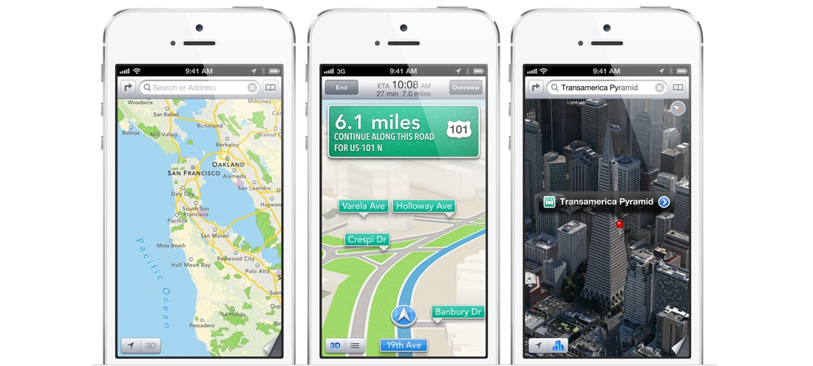
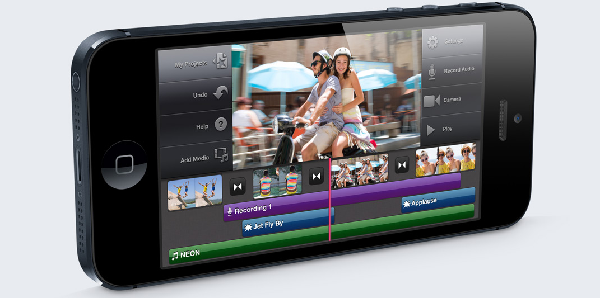

Mult mai mult decat inainte. Dar si mult mai putin.Mult mai mult decât înainte. Dar şi mult mai puţin. Un design remarcabil de subţire care lasă loc pentru un ecran mai mare şi un cip mai rapid. Conexiuni ultrarapide care nu sacrifică durata de viaţă a bateriei. Căşti complet noi proiectate să aibă un sunet perfect şi să se potrivească confortabil. Atât de mult a fost pus în noul iPhone. Ca tu să poţi obţine şi mai multe de la el. Subțire, rafinat și foarte capabil.E greu de crezut că un telefon atât de subţire poate oferi atât de multe funcţionalităţi: un ecran mai mare, un cip mai rapid, conectivitate de ultimă generaţie, o cameră iSight de 8 MP şi multe altele. Toate acestea într-o carcasă elegantă din aluminiu, concepută şi fabricată la un nivel de precizie fără precedent. iPhone 5 are o grosime de doar 7,6 milimetri şi cântăreşte doar 112 grame.1 Adică e cu 18% mai subţire şi cu 20% mai uşor decât iPhone 4S. Singura modalitate de a realiza un astfel de design este să iei în considerare (şi să reconsideri) fiecare detaliu în parte — inclusiv detaliile pe care nu le vezi. Ecran mai mare, mai multe de văzut.Oricine poate să facă un ecran mai mare de smartphone. Dar dacă îl măreşti doar de dragul dimensiunii, o să obţii un telefon supradimensionat, incomod şi greu de folosit. iPhone 5 are un ecran de 4 inchi care este conceput aşa cum trebuie: este mai mare, dar are aceeaşi lăţime ca şi iPhone 4S. Astfel că orice ai făcut întotdeauna cu o singură mână — să scrii la tastatură, de exemplu — poţi să continui să faci cu o singură mână. 
Conectivitate celulară şi wireless de ultimă generaţie.iPhone 5 este compatibil cu şi mai multe reţele din toată lumea. Acestea includ reţele precum HSPA, HSPA+ şi DC-HSDPA. Navighează, descarcă şi fă streaming de conţinut la viteze ultrarapide. Conectivitatea wireless în bandă dublă 802.11n accelerează şi experienţa ta Wi-Fi — până la 150 Mbps. Camera cea mai populara din lume.iPhone este cea mai populară cameră din lume. Şi pe bună dreptate. Fotografiile sunt atât de uimitoare, încât este greu de crezut că au fost făcute cu un telefon mobil. Şi tot ceea ce a făcut ca iSight de pe iPhone 4S să fie cea mai preferată cameră din lume se află acum pe iPhone 5 — şi nu numai atât. Noul mod Panoramă îţi permite să capturezi tot, de la o reuniune de familie la o fotografie incredibilă a Marelui Canion. 
Un nou mod de a te conecta.Pentru a face iPhone 5 mai subţire şi mai uşor, a fost nevoie de o schimbare esenţială: înlocuirea conectorului de 30 de pini cu ceva mai nou, mai mic şi mai bun. Îţi prezentăm conectorul Lightning. Acesta are un design cu 8 semnale complet digital, care este semnificativ mai rezistent decât conectorul cu 30 de pini. O altă caracteristică genială a conectorului Lightning: este inversabil. Ceea ce înseamnă că nu poţi să conectezi cablul greşit. |